Raster analysis allows you to perform analysis of large raster datasets using ArcGIS Image Server. This allows you to analyze more data faster by harnessing the power of the server.The toolsets currently available through the Portal for ArcGIS web user experience are Summarize Data, Analyze Patterns, Use Proximity, Analyze Image, Analyze Terrain, Manage Data, Deep Learning, and Multidimensional Analysis.
Summarize Data
These tools are used for calculating statistics for a raster layer within the area boundaries (zones) defined by you.
- Summarize Raster Within calculates statistics for raster cells that fall within defined area boundaries.
- Zonal Statistics as Table summarizes the values of a raster within the zones of another dataset and reports the results to a table.
Summarize Raster Within |

|
This tool summarizes the values of a raster within the zones of another dataset.
Zonal Statistics as Table |
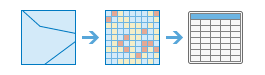 |
This tool summarizes the values of a raster within the zones of another dataset and reports the results to a table.
Analyze Patterns
These tools help you identify, quantify, and visualize spatial patterns in your data.
- Calculate Density takes known quantities of some phenomenon and creates a density map by spreading these quantities across the map.
- Interpolate Points predicts values at new locations based on measurements found in a collection of points.
Calculate Density |

|
Density analysis takes known quantities of some phenomenon and creates a density map by spreading these quantities across the map. You can use this tool, for example, to show concentrations of lightning strikes or tornadoes, access to health care facilities, and population densities.
Interpolate Points |

|
This tool allows you to predict values at new locations based on measurements found in a collection of points. The tool takes point data with values at each point and returns areas classified by predicted values. You can use this tool, for example, to predict rainfall levels across a watershed based on measurements taken at individual rain gauges.
Use Proximity
These tools help you answer some of the most common questions posed in spatial analysis: What is near what? and What is the most optimal path?
- Calculate Distance calculates the Euclidean distance, direction, and allocation from a single or set of sources.
- Determine Optimum Travel Cost Network calculates the optimum cost network from a set of input regions.
- Determine Travel Cost Path As Polyline calculates the least-cost polyline path between known destinations and sources.
- Distance Accumulation calculates the accumulated distance for each cell to sources, allowing for straight-line distance, cost distance, and true surface distance, as well as vertical and horizontal factors.
- Distance Allocation calculates distance allocation for each cell to the provided sources based on straight-line distance, cost distance, and true surface distance, as well as vertical and horizontal factors.
- Optimal Path As Line calculates the optimal path from destinations to sources as a line.
- Optimal Path As Raster calculates the optimal path from destinations to sources as a raster.
- Optimal Region Connections calculates the optimal connectivity network between two or more input regions.
Calculate Distance |

|
This tool calculates Euclidean distance, direction, and allocation from a single source or set of sources.
Determine Optimum Travel Cost Network |

|
This tool calculates the optimum cost network from a set of input regions.
Determine Travel Cost Path As Polyline |
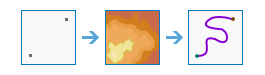 |
This tool calculates the least-cost polyline path between destinations and sources.
Distance Accumulation |
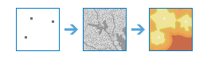 |
This tool calculates the accumulated distance for each cell to sources, allowing for straight-line distance, cost distance, true surface distance, and vertical and horizontal factors.
Distance Allocation |
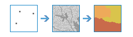 |
This tool calculates distance allocation for each cell to the provided sources based on straight-line distance, cost distance, true surface distance, and vertical and horizontal factors.
Optimal Path As Line |
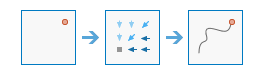 |
This tool calculates the optimal path from destinations to sources as a line.
Optimal Path As Raster |

|
This tool calculates the optimal path from destinations to sources as a raster.
Optimal Region Connections |
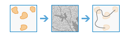 |
This tool calculates the optimal connectivity network between two or more input regions.
Analyze Image
The following tool in the Analyze Image tool category helps you analyze images:
- Monitor Vegetation detects relative vegetation coverage in an image based on arithmetic operations on the bands. Several vegetation indices are available for image analysis.
Monitor Vegetation |

|
Performs an arithmetic operation on the bands of a multiband raster layer to reveal vegetation coverage information.
Analyze Terrain
These tools help you analyze raster surfaces.
- Calculate Slope calculates the steepness of terrain.
- Derive Aspect calculates the direction of steepest slope for each location.
- Create Viewshed identifies what can be seen from any point on the landscape.
- Watershed calculates the contributing area above identified location(s) on a surface.
Calculate Slope |

|
Identifies a surface that shows the slope of the input elevation data. Slope represents the rate of change of elevation for each digital elevation model (DEM) cell.
Derive Aspect |

|
Identifies the downslope direction of the maximum rate of change in value from each cell to its neighbors. Aspect can be thought of as the slope direction.
Create Viewshed |

|
Determines the locations on a raster surface that are visible to a set of observers.
Watershed |

|
Determines the contributing area above a set of cells in a raster.
Manage Data
These tools are used for both the day-to-day management of geographic data and for combining data prior to analysis.
- Extract Raster clips out portions from a raster dataset for further analysis.
- Remap Values assigns different values to raster cells.
- Convert Feature to Raster rasterizes vector data.
- Convert Raster to Feature vectorizes raster data.
- Sample extracts data at defined locations from a raster, or set of rasters.
Extract Raster |

|
Extract cells from a raster based on value, shape, or the extent of a different dataset.
Remap Values |

|
Change the individual or ranges of cell values to new values.
Convert Feature to Raster |

|
Create a new raster dataset from an existing feature dataset.
Convert Raster To Feature |

|
Create a new feature dataset from an existing raster dataset.
Sample |
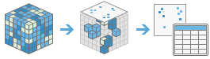 |
Creates a table or point feature class with data values at defined locations extracted from a raster or set of rasters.
Deep Learning
These tools are used to detect or classify specific features in an image or to classify pixels in a raster dataset. Deep learning is a type of artificial intelligence machine learning method that detects features in imagery using multiple layers in neural networks where each layer is capable of extracting one or more unique features in the image. These tools consume the models that have been trained to detect specific features in third-party deep learning frameworks—such as TensorFlow, CNTK and Keras—and output features or class maps.
- Classify Pixels Using Deep Learning produces a classified raster using a trained deep learning model.
- Detect Objects Using Deep Learning produces a feature class containing objects it finds in an input raster using a trained deep learning model.
- Classify Objects Using Deep Learning produce a feature class or table in which each input object in an input raster is assigned with a class label using a trained deep learning model.
Classify Pixels Using Deep Learning |
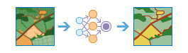 |
This tool runs a trained deep learning model on an input raster to produce a classified raster, and each valid pixel has an assigned class label.
Detect Objects Using Deep Learning |
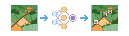 |
This tool runs a trained deep learning model on an input raster to produce a feature class containing the objects it finds. The features can be bounding boxes or polygons around the objects found, or points at the centers of the objects.
Classify Objects Using Deep Learning |
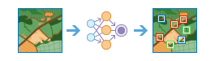 |
This tool runs a trained deep learning model on an input raster and an optional feature class to produce a feature class or table in which each input object has an assigned class label.
Multidimensional Analysis
The tools in the Multidimensional Analysis toolset allow you to perform analysis on scientific data across multiple variables and dimensions.
Multidimensional data represents data captured at multiple times, depths, and heights. This type of data is commonly used in atmospheric, oceanographic, and earth sciences. With this toolset, you can analyze multidimensional raster data in multiple formats, including netCDF, HDF, GRIB, the multidimensional mosaic dataset, and Esri's Cloud Raster Format (CRF).
The following table lists the multidimensional analysis tools and provides a brief description of each.
- Aggregate Multidimensional Raster generates a multidimensional raster dataset by aggregating existing multidimensional raster variables along a dimension.
- Generate Multidimensional Anomaly computes the anomaly for each slice in a multidimensional raster to generate a multidimensional raster.
- Generate Trend Raster estimates the trend for each pixel along a dimension for one or more variables in a multidimensional raster.
- Predict Using Trend Raster computes a forecasted multidimensional raster using the output trend raster from the Generate Trend Raster tool.
- Find Argument Statistics extracts the dimension value or band index at which a given statistic is attained for each pixel in a multidimensional or multiband raster.
Aggregate Multidimensional Raster |
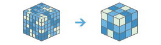 |
This tool generates a multidimensional raster dataset by aggregating existing multidimensional raster variables along a dimension.
Find Argument Statistics |
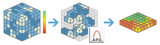 |
This tool extracts the dimension value or band index at which a given statistic is attained for each pixel in a multidimensional or multiband raster.
Generate Multidimensional Anomaly |
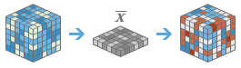 |
This tool computes the anomaly for each slice in a multidimensional raster to generate a multidimensional raster.
Generate Trend Raster |
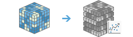 |
This tool estimates the trend for each pixel along a dimension for one or more variables in a multidimensional raster.
Predict Using Trend Raster |
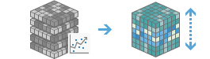 |
This tool computes a forecasted multidimensional raster using the output trend raster from the Generate Trend Raster tool.